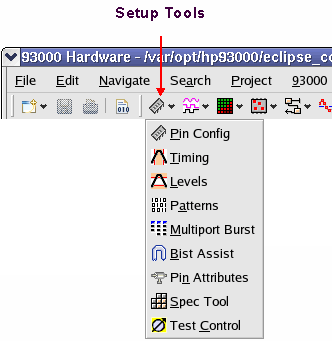
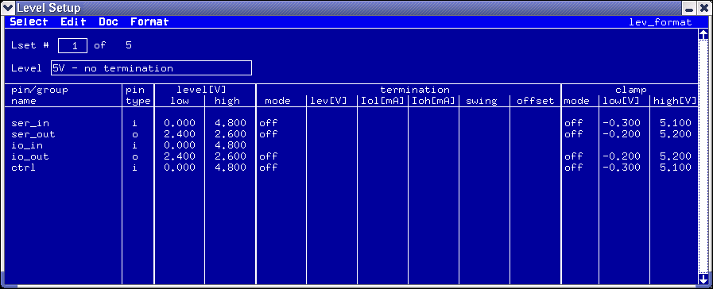

Create levels
The next step in the device setup is to specify the level setups for the DUT. The setups can be entered and displayed using the Level Setup window.
The Level Setup window contains four main screens:
- I/O Pins
- DPS Pins
- I/O Pins with Equations and Specifications
- DPS Pins with Equations and SpecificationsNote The Level Setup window is prepared for a fifth screen named "DPS Overvoltage" (you find the respective entry in the Select menu). This screen is currently not available.
Together, these windows allow you to define the level parameters for all the DUT pins which have been previously defined in the Pin Configuration window.
The I/O pins screen allows you to tell the system:
- The voltage level to drive for a logic-high (`1') state
- The voltage level to drive for a logic-low (`0') state
- The threshold voltage to use, to decide if a DUT output is high
- The threshold voltage to use, to decide if a DUT output is low
- The termination type to use
- Whether to use clamp voltage or the active load
- The active termination voltage to use for output pins
- The clamp voltage to set
- The commutation voltage to set
- The active load to set
The DPS pins screen allows you to tell the system:
- The voltage and current requirements of the DUT's power pins.
- The off-state current definition
- The setup time
- The VBUMP voltage.
The Equations and Specifications screens (for I/O and DPS pins, respectively) are essentially the same as the normal I/O Pins and DPS Pins screens, except that they also display information on the particular equation set and specification set used.
The windows support both non-equation based and equation based level definitions, but all the examples in this section use the equation based definition method.

The Level Setup window opens.
